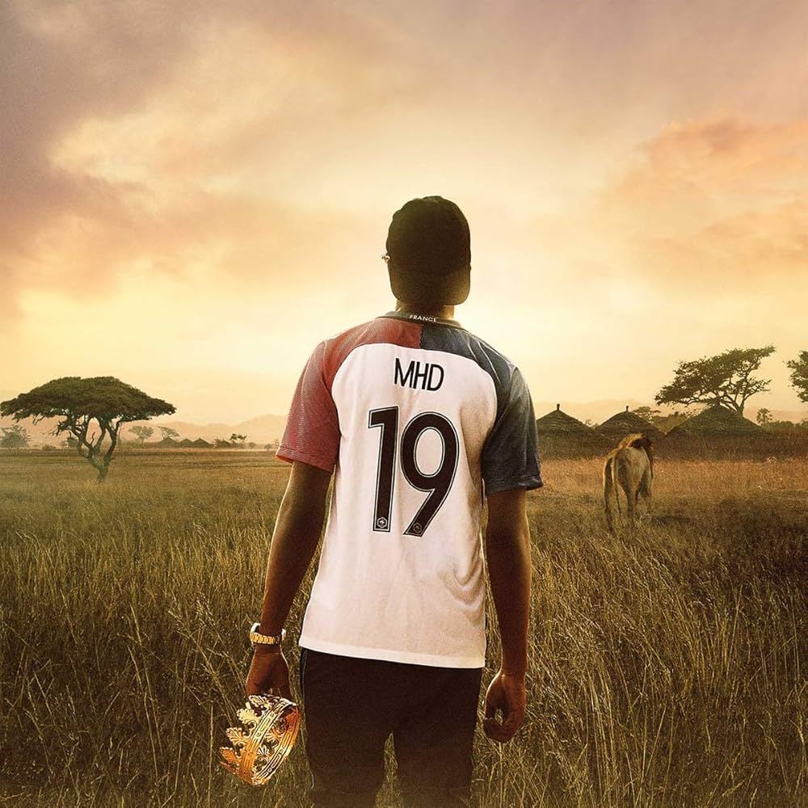

Le retour culturel : la musique et la diaspora
Le rapport entre le français et les langues d'Afrique de l'Ouest ne se limite plus à l'imposition coloniale. Depuis quelques décennies, un mouvement inverse s'est engagé : ce sont aujourd'hui les artistes issus de la diaspora ouest-africaine en France qui transforment la langue française, en y intégrant le wolof, le bambara, les rythmes et les références culturelles de leurs origines. Ce phénomène inverse le rapport colonial : la langue du colonisateur est désormais nourrie, façonnée et renouvelée par les enfants des colonisés.
MC Solaar et la naissance du rap francophone
La figure pionnière de cette transformation est MC Solaar. Né Claude M'Barali à Dakar de parents tchadiens, il grandit en banlieue parisienne et devient au début des années 1990 l'un des fondateurs du rap francophone. Son style, marqué par les jeux de mots, les références littéraires et une diction soignée, montre dès le départ que le rap français peut être une langue d'art à part entière. Solaar prouve que le hip-hop, importé des États-Unis, peut s'enraciner dans la langue française tout en portant une voix issue des marges et de l'immigration.

Couvert de l'album 19 par MHD (Source : Wikimedia Commons)
MHD et l'invention de l'Afro Trap
Une génération plus tard, MHD pousse plus loin la rencontre entre rap et musique africaine. D'origine guinéenne et sénégalaise, élevé dans le 19e arrondissement de Paris, il invente vers 2015 ce qu'il appelle l'« Afro Trap », un style qui mélange les rythmes ouest-africains, les sonorités électroniques de la trap américaine et le français du rap parisien.
Son morceau « A Kele Nta », dont le titre est en bambara (« il n'y a personne »), connaît un succès international. Le clip, tourné dans les rues de Dakar avec une foule de jeunes qui dansent, illustre parfaitement cette circulation culturelle : un rappeur français d'origine ouest-africaine retourne au Sénégal pour filmer un titre qui mêle bambara et français, et qui sera ensuite consommé dans les deux pays.
Aya Nakamura, phénomène global
Aya Nakamura représente une autre facette de ce phénomène. Née au Mali, élevée en Seine-Saint-Denis, elle est aujourd'hui l'artiste francophone la plus écoutée dans le monde. Son tube « Djadja » (2018) est devenu un phénomène mondial, traduit et repris dans des dizaines de pays.
La langue qu'elle utilise n'est pas le « français standard » : elle invente, déforme, mélange, intègre des expressions de banlieue, des mots du wolof ou du bambara, et un argot personnel. L'Académie française et certains commentateurs conservateurs l'ont parfois accusée de « mal parler » ; mais des linguistes comme Aurore Vincenti rappellent qu'une langue qui se renouvelle est une langue vivante, et que ces apports populaires sont précisément ce qui permet au français d'évoluer.
Le verlan, l'argot et les traditions griot
Au-delà de ces trois figures, c'est tout un écosystème musical qui transforme aujourd'hui la langue française. Le verlan, déjà ancien, s'enrichit constamment de nouveaux mots issus de l'immigration africaine. Des termes comme « bendo », « bicrave », « seum », « wesh » ou « bled » sont entrés dans l'usage courant des jeunes Français, souvent sans qu'ils en connaissent l'origine. Les traditions griot — l'art de raconter, de louer, de provoquer en rythme — résonnent dans les flows des rappeurs contemporains.
Une langue partagée, transformée par ceux qu'elle voulait transformer
Ce retour culturel n'est pas un simple phénomène de mode. Il transforme durablement le français parlé, et il modifie aussi le rapport que la France entretient avec ses anciennes colonies. Le centre de gravité créatif de la langue française se déplace : Dakar, Abidjan, la banlieue parisienne, Bruxelles ou Montréal deviennent des laboratoires linguistiques aussi importants que Paris.
Le français cesse d'être la propriété d'un seul pays pour devenir une langue partagée, transformée par ceux qu'il avait autrefois cherché à transformer. Au Sénégal comme en France, ce français — plus métissé, plus rythmé, plus poreux — est sans doute l'une des incarnations les plus vivantes de la francophonie au XXIe siècle.